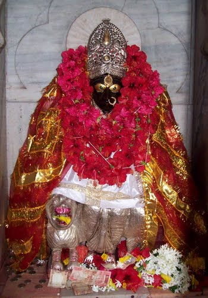

Located on the Nilanchal Hill in the western part of Guwahati in Assam, the Kamakhya temple is one of the most revered shrines of Shakti in India. The shrine is one of the 51 Shakti Peethas in the country and is a part of the four most important Shakti Peethas along with the Vimala Temple and Sthana Khanda in Odisha and Dakhina Kalika in Kolkata, West Bengal. Kamakhya temple is the Goddess of Desire, and celebratory for the Tantrik sect of Hinduism. Followers of the Tantra Sect place their belief in Kamakshi or Kamakhya and hence this shrine holds tremendous religious, historic and archaeological significance.
Although Kamakhya is the presiding deity of this temple, the 10 Mahavidyas also make an appearance in the temple. Among these, Tripurasundari, Matangi, and Kamal reside in the main sanctum of the temple while Kali, Tara, Sodashi, Bhuvaneshwari, Chhinnamasta, Dhumvati, and Bagalamukhi have individual temples dedicated to them. The main entrance of the Kamakhya temple is beautifully designed with simple yet elegant carvings which are lightly decorated with colourful flowers. The temple has a massive dome which overlooks the quaint Nilanchal Hills in the background. Visit this temple for a long due acquaintance with the divine.
The Kamakhya Temple is one of the oldest temples in the country and hence has a long and illustrious history associated with itself. It is believed that this temple was built during the Mleccha dynasty in 8th - 9th century. The Kamarupa Kings from Indra Pala to Dharma Pala were ardent followers of the Tantrik cult and at that time this temple became an important destination for Tantrikism. The Kalika Purana was composed in the 10th century and it enhanced the importance of the temple as a seat for Tantrik sacrifices and sorcery. Mystic Buddhism or Vajrayana emerged here around that time and a number of Buddhist professors in Tibet were known to belong to Kamakhya.
The Kamakhya temple was destroyed during Hussein Sha's invasion of the Kamata kingdom. The ruins remained undiscovered until the 1500s when the founder of the Koch Dynasty Vishwasingha revived the temple as a site of worship. The Kamakhya temple was reconstructed in 1565 during the reign of his son and ever since then, the shrine has been an important religious centre for Hindus across the world.
The current structure of the Kamakhya temple is said to be of the Nilachal type, which is another word for architectures with a hemispherical dome and a cruciform shaped base. The temple has four chambers aligned from east to west described as follows:-
Legend says that once upon a time, a very powerful king named Daksha ruled in the country. He had a beautiful daughter named Sati, and when she came of age, King Daksh began looking for a suitable groom for her. As luck would have it, Sati got attracted to Lord Shiva whom King Daksh despised thoroughly. Despite wanting otherwise, Sati and Shiva got married and started living together. This was not acceptable to King Daksh, and he decided to organize a 'yajna' or fire sacrifice ritual where Shiva and Sati were not invited. However, Sati decided to attend her father's prayer service in spite of not being invited to the same. Upon reaching the venue, she and her husband were thoroughly disrespected by Daksh and unable to tolerate the humiliation, Sati jumped into the ritualistic fire.

Upon learning of Sati's death, Shiva was livid and he started performing the 'Tandava' or celestial dance of destruction. This gave way to apocalyptic destruction on the Earth, and the Gods feared that the world was nearing its end. When repeated pleas to Shiva by the other Gods went in vain, Lord Vishnu used his Sudarshan Chakra upon Sati's dead body which cut it into 52 different parts. Each of the remains fell on a different portion of the country and a temple emerged there. The Kamakhya Devi Temple was the site where Sati's 'yoni' or vulva had fallen. This temple is a center for the worship of Shakti, who is believed to be the Goddess of Desire.
The Ambubachi Festival is a celebration of the Goddess' fertility. The celebration hinges on the belief that the Mother Goddess, Kamakhya, Shiva's young bride, is menstruating at this time. The Temple remains closed and the Goddess is bathed after those three days after which the normal activities of the temple are resumed. It is believed that at the time of monsoon when this festival is observed, the Mother Earth is at her fertile best due to the rain nurturing her womb (the soil).
On regular days, the temple remains open from 08:00 AM - 01:00 PM and 02:30 PM- 05:30 PM. However, on special days, like Durga Puja, the timings changes are as follows:-
5:30 AM - Snana of the Pithasthana
6:00 AM - Nitya puja
8:00 AM - Temple door open for devotees
1:00 PM - Temple door closed for food offerings to the goddess